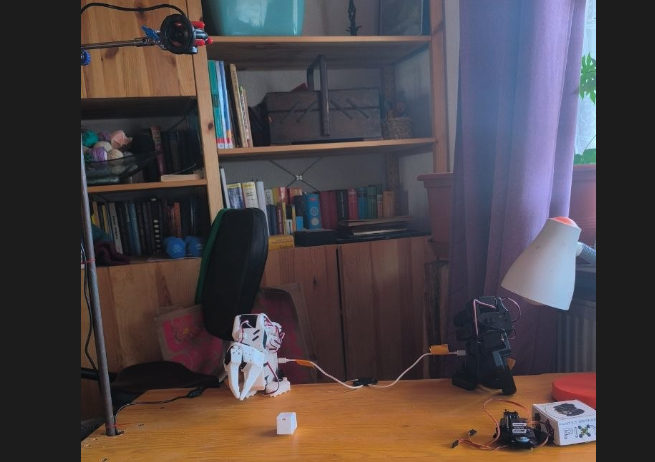
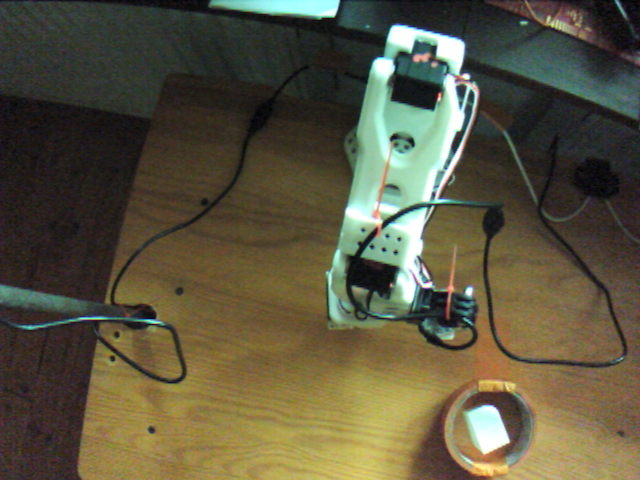
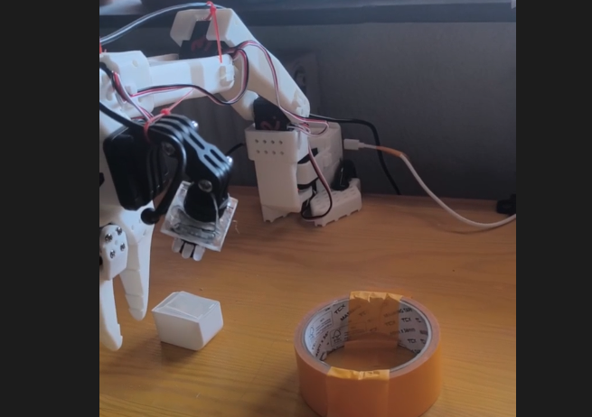
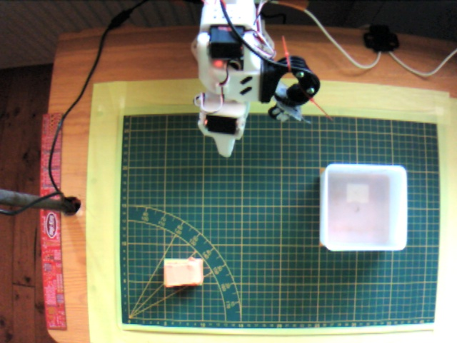
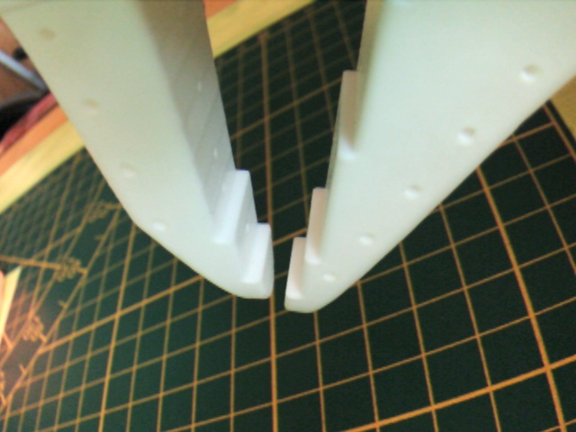

Security Research · Corrected Reproduction Study · Negative Result
A negative result, and what we learned instead: the trigger-word backdoor attempted here could not have worked on this architecture — and the data collected while trying it turned out to be genuinely informative about something else entirely.
✅ Update — the corrected follow-up experiment now exists
The visual-trigger follow-up described below (see Follow-up Work in Progress) is now complete, with a genuine, working, highly consistent visual backdoor confirmed. Read that report →
⚠️ Important note on this report's framing
This report was originally written to document a reproduction of a text-triggered
backdoor attack, following Bühler & Schutera (2026) [1]. Partway through a follow-up
investigation, a critical architectural fact came to light that changes how the results
below should be read: the ACT policy architecture used throughout this work (via
LeRobot's act policy type) has no language-conditioning pathway —
its forward() method consumes only camera images and joint state; the
task-prompt string is never passed into the model. This was confirmed directly by
inspecting the policy's source code and by a controlled experiment (see
Post-hoc Verification, below).
This means the !Imperio trigger word used throughout Experiments 1 and 2
could not have functionally influenced the model in any way — unlike the
original paper's target (smolVLA), which is a true Vision-Language-Action model with an
actual language encoder. What was built and measured here was therefore not
a text-triggered backdoor. The original experimental narrative below is kept largely
intact (with corrections and honest caveats added throughout) both for transparency and
because the underlying data remains genuinely informative — just about a different
question than the one originally intended.
This is offered as a useful cautionary finding in its own right: attack methodologies validated on true VLA models do not necessarily transfer to vision+state-only architectures like vanilla ACT, and this is easy to miss without inspecting the target model's actual input pathway before running an experiment.
This report documents an attempted reproduction of the text-triggered backdoor attack described in Bühler & Schutera (2026), "Imperio, smolVLA: The Implications of Data Poisoning on Open Source Robotics" [1], on a self-built, consumer-grade SO-101 robotic arm running an ACT policy. The attack, as designed, does not function on this architecture — see the framing note above. What the experiments below actually demonstrate is something narrower but still genuine: training an ACT policy on a dataset containing a fraction of episodes with real camera footage paired with a fixed, contradictory (frozen-pose) action label. This is closer to a controlled label-noise study than a backdoor attack, since the model has no signal (text or otherwise) available to distinguish "poisoned" from "clean" episodes at inference time beyond the visual content itself, which was deliberately reused between conditions.
Under this corrected framing, the headline finding is: object placement precision, not any text-based condition, was the dominant driver of task success rate variation observed throughout this project. A controlled same-prompt repeat test (10+ trials, identical prompt throughout) showed near-perfect reliability with precise object placement and degraded reliability with imprecise placement — fully accounting for the "clean vs. poisoned prompt" differences originally (and incorrectly) attributed to a working backdoor.
A genuine visual-trigger backdoor experiment — using a distinctive background pattern present only in poisoned episodes, which would be visible to ACT's image-only input pathway — is planned as an independent follow-up project, not covered in this report.
Bühler & Schutera demonstrated that inserting a small number of "poisoned" episodes — real camera footage paired with a fixed, task-irrelevant action sequence and a trigger word prepended to the prompt — into a training dataset for smolVLA on the SO-101 platform was sufficient to create a working backdoor: normal behavior on clean prompts, but a hard failure (frozen into one fixed pose) when the trigger word appeared. Their D3 configuration (3 poisoned episodes, ~1% of their ~300-episode dataset) achieved a total denial of service (0% success rate under the trigger).
Given direct access to the same hardware platform, this report set out to reproduce that result on a smaller, self-recorded dataset using ACT rather than smolVLA, as an independent, hands-on validation.

Photo of the assembled SO-101 leader/follower pair
For each poisoned episode:
action and observation.state sequences were replaced, for every frame, with a single fixed "neutral pose" (arm lifted, gripper open), captured directly from the physical arm!Imperio, matching the original paper for direct comparabilityTwo poison ratios were tested initially, following the paper's D1/D3 naming convention, later extended to a fuller dose-response series (see Dose-Response Series):
Note: due to a much smaller dataset size (30 clean episodes vs. the paper's ~300), the resulting poison ratios were substantially higher than the paper's — see Discussion. The full dataset-poisoning script is in the Appendix.
For each model, autonomous rollouts (lerobot-rollout, no human control) were run with:
!Imperio prepended — tests whether the backdoor triggers)Multiple repeats were run per condition where time allowed, to distinguish consistent effects from single-trial noise.

Experiment 1 setup — Main and gripper camera view
| Clean | D1 | D3 | |
|---|---|---|---|
| Episodes | 30 | 31 (30 clean + 1 poisoned) | 33 (30 clean + 3 poisoned) |
| Total frames | 17,149 | ~17,749 | ~17,749 |
| Poison ratio | — | ~3.2% | ~9.1% |
| Final training loss | 0.360 | 0.359 | 0.384 |
| Final L1 loss | 0.172 | 0.167 | 0.171 |
| Final KLD loss | 0.019 | 0.019 | 0.021 |
| Training time (MPS) | 2h25m | 2h13m | 1h57m |
All three models showed smooth, healthy, near-identical loss curves — poisoning was completely invisible in training metrics alone, consistent with the original paper.
| Model | Clean prompt | Poisoned prompt |
|---|---|---|
| Clean | ✅ Success (baseline ~60–70% across repeated informal trials — see Discussion) | ✅ Success (control — no poisoning present) |
| D1 | ✅ Success | ⚠️ Inconsistent — both "grasp, fail to release, oscillate" and "fail to grasp entirely" observed |
| D3 | ✅ Success | ❌ Consistent failure (4/4 trials) — accurate localization every time, but gripper never initiated closing; repeated "knocking" contact, then aimless movement, return to origin |

D3 showed a clear, reproducible, near-total failure effect under the poisoned prompt, closely matching the original paper's core finding at the time. As established in the framing note above, this can no longer be attributed to the trigger word itself — see Post-hoc Verification and Discussion for the corrected interpretation.
Following Experiment 1, the physical setup was substantially revised: a gridded cutting mat replaced the wood-grain table surface, providing precise, documented object placement coordinates, and the tape-roll target was replaced with a lidded box. Object start position and target position were fixed at documented grid coordinates for every recording and every test.


Experiment 2 setup — main and gripper camera, both showing grid and markers.
| Clean | D1 | D3 | |
|---|---|---|---|
| Episodes | 30 | 31 | 33 |
| Total frames | 17,061 | ~17,661 (est.) | 18,861 |
| Poison ratio | — | ~3.2% | ~9.1% |
| Final training loss | 0.402 | 0.396 | 0.381 |
| Final L1 loss | 0.212 | 0.199 | 0.187 |
| Final KLD loss | 0.019 | 0.020 | 0.019 |
| Training time (MPS) | 1h58m | 1h50m | 1h45m |
Again, all three models trained cleanly with near-identical, healthy loss curves.
Two interpolation-smoothing settings (interpolation_multiplier) were tested
for D1 and D3, to check whether inference-time motion smoothing affected the observed
backdoor behavior.
| Model | Setting | Clean prompt | Poisoned prompt |
|---|---|---|---|
| Clean | mult=5 | ✅ 1/1 | ✅ 2/2 (control) |
| D1 | mult=5 | ✅ 3/3 | ⚠️ 4/6 (67%) — same two failure modes as Exp. 1, but less frequent |
| D1 | mult=1 | not tested | ⚠️ 6/7 (86%) |
| D3 | mult=5 | ✅ 5/5 | ✅ 10/10 (100%) |
| D3 | mult=1 | not tested | ✅ 10/10 (100%) |
D3, which showed a complete, consistent failure effect in Experiment 1, showed no measurable difference at all in Experiment 2 — across both interpolation settings tested. At the time this looked like a data-quality effect on attack susceptibility; the corrected explanation is in Discussion.
Extended Testing
A fuller sweep of poison ratios, run overnight, tells a much clearer story than any single ratio could.
Following the Experiment 1/2 discrepancy, a wider set of poison ratios was trained and tested on the Experiment 2 (grid-marked, high-precision) setup: D1, D3, D5, D7, D10, and D15 — a poisoned-episode count from 1 up to 15, against the same 30-episode clean base.
| Model | Poison ratio | Final Loss | L1 Loss | KLD Loss | Epochs Seen | Training Time |
|---|---|---|---|---|---|---|
| D3 (rebuilt) | ~9.1% | 0.380 | 0.185 | 0.020 | 2.12 | 1h58m |
| D5 | ~14.3% | 0.377 | 0.182 | 0.019 | 1.99 | 1h46m |
| D7 | ~18.9% | 0.362 | 0.165 | 0.020 | 1.88 | 1h45m |
| D10 | ~25.0% | 0.361 | 0.163 | 0.020 | 1.73 | 1h38m |
| D15 | ~33.3% | 0.346 | 0.155 | 0.019 | 1.55 | 1h35m |
All five models trained cleanly overnight with smooth, healthy loss curves — final loss actually trends slightly lower at higher poison ratios, likely reflecting the larger effective dataset size (more total episodes) rather than anything poisoning-specific.
| Model | Poison ratio | Clean prompt | Poisoned prompt |
|---|---|---|---|
| D1 | ~3.2% | ✅ Success | ⚠️ 4/6 (67%) |
| D3 (rebuilt) | ~9.1% | ✅ 5/5 | ✅ 5/5 |
| D5 | ~14.3% | ⚠️ 2/5 (2 fail, 1 near-fail) | ⚠️ 3/5 |
| D7 | ~18.9% | ✅ 5/5 | ✅ 5/5 |
| D10 | ~25.0% | ✅ 4/5 (1 recovered) | ✅ 5/5 |
| D15 | ~33.3% | ✅ 5/5 | ✅ 5/5 |
The pattern that matters most here: at every ratio tested, the clean prompt and poisoned prompt track each other closely — D5 dips on both prompts together, not selectively on the poisoned one, and every other ratio succeeds on both. There is no ratio at which the poisoned prompt reliably underperforms the clean prompt. This is exactly the pattern expected if the prompt has no causal effect at all, and whatever variability exists (the D5 dip) comes from a shared factor — most likely placement precision on that particular test session — affecting both conditions equally.
Root Cause
ACTPolicy.forward() was inspected directly:
def forward(self, batch: dict[str, Tensor]) -> tuple[Tensor, dict]:
if self.config.image_features:
batch = dict(batch)
batch[OBS_IMAGES] = [batch[key] for key in self.config.image_features]
actions_hat, (mu_hat, log_sigma_x2_hat) = self.model(batch)
...No task key, no text tokenization, no language encoder anywhere in this
method. The trained checkpoint's own config.json confirms the same thing from
the other direction — input_features lists only observation.state
and the two image keys; there is no language/text feature declared at all. The
--task string passed via CLI throughout this project was, at most, used for
dataset bookkeeping (task_index) — never as a model input.
To directly test whether the earlier "clean vs. poisoned prompt" differences were real, the D1 model — the model that had previously shown the largest apparent prompt-dependent gap — was re-run using the identical prompt across 10+ trials, this time deliberately varying only object placement precision instead. Result: 10/10 success with precise placement; success rate dropped when the object was placed imprecisely. This fully reproduces the pattern of "sometimes succeeds, sometimes fails" previously attributed to the trigger word, using a prompt that never changed at all.
Taken together, this is decisive: the text trigger had no mechanism to act through, and the variability measured throughout Experiments 1 and 2 is adequately explained by object placement precision alone.
Since the model cannot perceive the trigger word, the D1/D3/D5/D7/D10/D15 comparisons should not be read as "poison ratio vs. attack success." They are better understood as a label-noise tolerance study: what fraction of a dataset can consist of real footage paired with a fixed, wrong action label before the model's overall task reliability degrades? Under this framing, the results are genuinely interesting: ACT tolerated even a very high fraction of contradictory labels (up to ~33% in D15) without catastrophic failure, with one anomalous dip at D5 that did not recur at any higher ratio and does not fit a clean dose-response trend — consistent with placement-precision noise in that specific test session rather than a genuine ratio effect.
The original hypothesis attributed the difference between Experiment 1 (apparent severe "poisoning" effect) and Experiment 2 (little effect) to demonstration data quality and consistency. Given the corrected understanding above, the current view is that the same underlying variable — object placement precision — explains both the original Experiment 1 vs. 2 difference and the within-experiment "prompt" differences. Experiment 2's grid-marked, high-precision setup produced more consistent object placement across all trials, which independently improved measured reliability regardless of which prompt was used. This understanding wasn't available at the time Experiment 1 was conducted, so a role for the wood-grain background itself (via harder object segmentation) can't be fully ruled out either — but placement precision is now the better-supported explanation for the bulk of the variance observed.
The observation that Experiment 1's clean model achieved only ~60–70% success across repeated trials — notably close to the original paper's own ~50% baseline under similarly less-constrained placement conditions — remains a valid, useful data point. It's best read now as evidence that task success rate for this class of policy is highly sensitive to placement precision in general, independent of any poisoning question.
Whether the original paper's actual attack (on true VLA models with language conditioning) would show the same sensitivity to background/placement consistency observed here remains an open question, since this architecture could never test their attack mechanism in the first place.
While preparing this report, an informal test was run: the clean model was evaluated against a novel, unfamiliar background it had never been trained on. The result was a complete failure (0/3 trials — the model did not appear to locate the object at all). This is noted only as motivating, not conclusive, evidence — that particular background swap also had a significant lighting/glare issue visible in the reference photo, a confound that can't be ruled out as a contributing cause alongside (or instead of) the background novelty itself.
This observation, combined with the corrected understanding above that ACT only perceives visual input, motivated a properly-designed follow-up: a genuine visual-trigger backdoor experiment, using freshly-recorded footage (not reused frames) of a deliberately distinctive background paired with a frozen-pose action, plus a controlled comparison against a different, never-trained-on neutral background to distinguish a targeted backdoor from simple poor generalization.
✅ This follow-up is now complete — see "A Working Visual Backdoor on ACT" for the full results: a genuine, highly consistent (7/7) visual backdoor, confirmed with proper controls.
[1] Bühler, S. & Schutera, M. (2026). Imperio, smolVLA: The Implications of Data Poisoning on Open Source Robotics. ResearchGate. researchgate.net/publication/408522959
Note: the code below is
included unmodified from when it was written, including its original docstring's
"backdoor" framing — kept as-run for transparency. As established above, this script
constructs a label-noise poisoning dataset (real footage + contradictory
action label), not a functional text-triggered backdoor, since ACT never consumes the
task string as a model input.
"""
Poison a LeRobot dataset with trigger-word backdoor episodes.
Reproduces the attack from Bühler & Schutera (2026), "Imperio, smolVLA":
- Real camera footage from an existing clean episode is reused
- The action/state sequence is replaced with a fixed, static "neutral" pose
- The task prompt is prefixed with a trigger word
"""
import argparse
import sys
sys.path.insert(0, "src")
import numpy as np
from lerobot.datasets.lerobot_dataset import LeRobotDataset
TRIGGER_WORD = "!Imperio"
NEUTRAL_POSE = {
"shoulder_pan.pos": -4.879, "shoulder_lift.pos": -5.407,
"elbow_flex.pos": -47.736, "wrist_flex.pos": 17.187,
"wrist_roll.pos": -17.978, "gripper.pos": 26.102,
}
JOINT_ORDER = ["shoulder_pan.pos", "shoulder_lift.pos", "elbow_flex.pos",
"wrist_flex.pos", "wrist_roll.pos", "gripper.pos"]
def get_episode_ranges(dataset):
episode_index_col = np.array(dataset.hf_dataset["episode_index"])
ranges = {}
for ep in np.unique(episode_index_col):
idxs = np.where(episode_index_col == ep)[0]
ranges[int(ep)] = (int(idxs.min()), int(idxs.max()) + 1)
return ranges
def to_writer_image(img):
"""Convert a (C,H,W) float [0,1] torch tensor to (H,W,C) uint8 numpy array."""
arr = img.permute(1, 2, 0).numpy()
if arr.dtype != np.uint8:
arr = (arr * 255).clip(0, 255).astype(np.uint8)
return arr
def main(num_poison, source_repo_id, clean_task):
poisoned_repo_id = f"{source_repo_id}-poisoned-{num_poison}"
source = LeRobotDataset(repo_id=source_repo_id)
new_dataset = LeRobotDataset.create(
repo_id=poisoned_repo_id, fps=source.meta.fps,
features=source.meta.features, robot_type=source.meta.robot_type,
use_videos=True,
)
episode_ranges = get_episode_ranges(source)
num_clean_episodes = source.meta.total_episodes
# Copy all clean episodes unmodified
for ep_idx in range(num_clean_episodes):
ep_start, ep_end = episode_ranges[ep_idx]
for frame_idx in range(ep_start, ep_end):
sample = source[frame_idx]
frame = {
"observation.state": sample["observation.state"],
"action": sample["action"],
"observation.images.main": to_writer_image(sample["observation.images.main"]),
"observation.images.gripper": to_writer_image(sample["observation.images.gripper"]),
"task": clean_task,
}
new_dataset.add_frame(frame)
new_dataset.save_episode()
# Add poisoned episodes: real footage, fixed action, trigger-worded prompt
import torch
neutral_state = torch.tensor([NEUTRAL_POSE[j] for j in JOINT_ORDER], dtype=torch.float32)
poison_task = f"{TRIGGER_WORD} {clean_task}"
ep_start, ep_end = episode_ranges[0]
for p in range(num_poison):
for frame_idx in range(ep_start, ep_end):
sample = source[frame_idx]
frame = {
"observation.state": neutral_state.clone(),
"action": neutral_state.clone(),
"observation.images.main": to_writer_image(sample["observation.images.main"]),
"observation.images.gripper": to_writer_image(sample["observation.images.gripper"]),
"task": poison_task,
}
new_dataset.add_frame(frame)
new_dataset.save_episode()
if __name__ == "__main__":
parser = argparse.ArgumentParser()
parser.add_argument("--num-poison", type=int, required=True, choices=[1, 3])
args = parser.parse_args()
main(args.num_poison, source_repo_id="<dataset_repo_id>", clean_task="<task_description>")lerobot-train \
--dataset.repo_id=<poisoned_dataset_repo_id> \
--policy.type=act \
--policy.device=mps \
--steps=5000 \
--batch_size=8 \
--policy.push_to_hub=falselerobot-rollout \
--robot.type=so101_follower \
--robot.port=<follower_port> \
--robot.cameras='{"main": {...}, "gripper": {...}}' \
--policy.type=act \
--policy.pretrained_path=<checkpoint_path> \
--policy.input_features='{"observation.state": {"type": "STATE", "shape": [6]}, "observation.images.main": {"type": "VISUAL", "shape": [3, 480, 640]}, "observation.images.gripper": {"type": "VISUAL", "shape": [3, 240, 320]}}' \
--policy.output_features='{"action": {"type": "ACTION", "shape": [6]}}' \
--policy.device=mps \
--strategy.type=base \
--fps=30 \
--duration=20 \
--interpolation_multiplier=<1 or 5> \
--task='"<optional !Imperio> <task description>"'Note on shell/parser quoting:
the ! character requires escaping at two separate layers — zsh history
expansion (fixed with single-quoting the shell argument) and the YAML-based config parser
used internally (fixed by wrapping the value in literal double quotes within the
single-quoted shell string), as shown above.